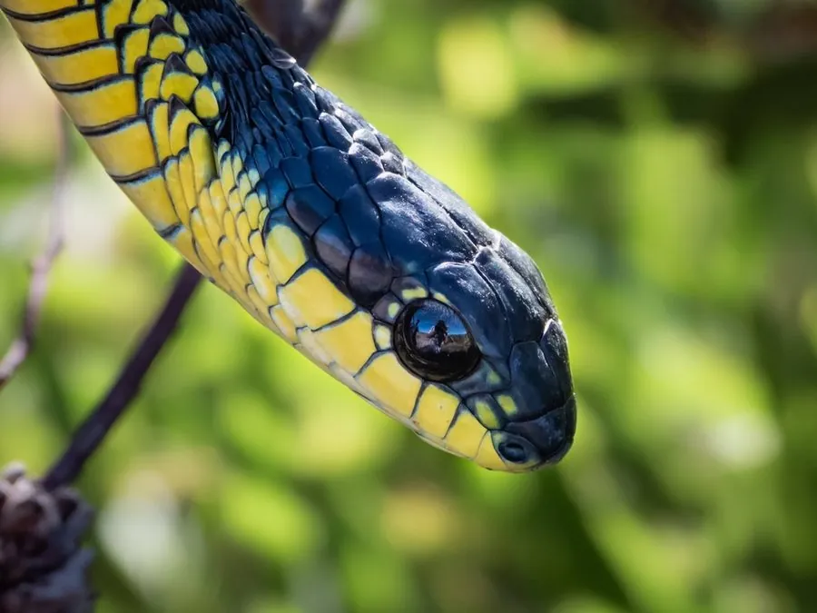

爬行动物 · 动物界
非洲树蛇 Dispholidus typus

非洲树栖的后沟牙毒蛇，属于毒性较强的后沟牙类群，毒液会破坏凝血功能，被咬后可能出血不止，须立即就医。
- 分类
- 门脊索动物门纲爬行纲目有鳞目科游蛇科属树蛇属
- 栖息环境
- 非洲撒哈拉以南的森林、稀树草原、灌丛与树冠层
- 地理分布
- 非洲撒哈拉以南大部分地区
- 保护级别
- IUCN 无危（LC）；非中国原产，在中国无保护级别
物种志
非洲树蛇体长 1.2–2 米，身体细长，头部呈椭圆形，眼睛大而突出，瞳孔圆形；体色变化很大，雄性多为鲜绿色，也有黄色、棕色或黑色个体，雌性多为褐色或橄榄色，腹部淡黄。它善于在树枝间攀爬，行动隐蔽，常静止不动地伪装成树枝。
它分布于非洲撒哈拉以南的森林、稀树草原和灌丛，白天在树上活动，捕食变色龙、鸟类、蛙类和小型哺乳动物。每年繁殖季雌蛇产卵 8–25 枚，孵化期约 3 个月。非洲树蛇属于后沟牙毒蛇，毒液主要破坏血液凝固功能，被咬后可能延迟数小时才出现出血症状，须立即就医；它性情胆小，一般避免与人接触，但被抓住时可能咬人，野外遇到不要徒手捕捉。
形态与习性
- 食性变色龙、鸟类、蛙类和小型哺乳动物
- 体长1.2–2 m
- 寿命约 10–15 年
- 繁殖卵生，8–25 枚，孵化约 3 个月
- 活动节律昼行性，树栖
- 毒性破坏凝血功能，被咬后可能延迟出血，须立即就医
趣味知识
- 非洲树蛇是后沟牙毒蛇，毒牙位于口腔后部，咬人时不一定注入毒液。
- 它的毒液会破坏凝血功能，被咬后可能数小时才出现出血症状。
- 非洲树蛇体色变化很大，雄性常为鲜绿色，雌性多为褐色。